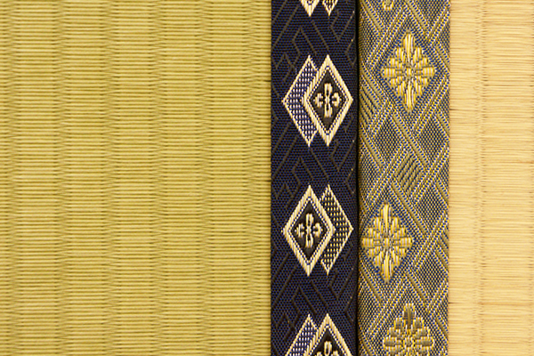
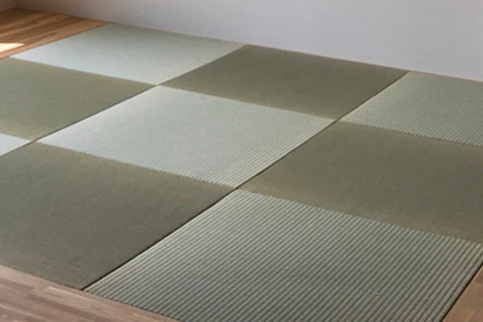
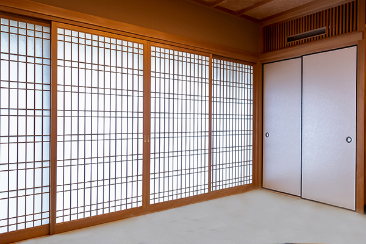

畳の種類について

| 商品名 | 畳価格(1帖) | 特徴・説明 |
|---|---|---|
| 拘り久（最上級品） | 8,600円 | 熊本ブランド表の最上級品。農林水産大臣賞を取っている農家さんが、一本一本丁寧に織った畳表です。本物を知るこだわりの逸品で、茶室などの伝統的な和室にふさわしい畳表です。 |
| おもてなし万（最上級品） | 7,600円 | 店主が自信をもっておすすめいたします。有機肥料減農薬で育てた、こだわりのイグサで織っております。日に焼けても綺麗な黄金色に変わります。仏間や座敷などにおすすめです。 |
| 癒し茂（上級品） | 4,600円 | 上質な畳表の代表的な畳です。良いものを長く使いたい方へ、耐久性・美しさ・香りは中国産と比べて明らかです。座敷や客間などにおすすめです。 |
| 暖らん登（上級品） | 5,600円 | 当店の一番人気のイグサの長さも本数も充実した肉厚な畳表です。お値段以上の満足感。人が良く集まるお部屋に最適です。 |
| 安らぎ喜（中級品） | 4,600円 | しっかりとした国産の畳。120cm以上の良質なイグサで織られており、見た目は上級とは差がありますが、安心できる国産畳の丈夫さがあります。2階のお部屋や子供部屋などに適しております。 |
| くつろぎ桜（普級品） | 3,600円 | とりあえず新しくしたいという方や、使用頻度の少ないお部屋などに適した国産の畳表です。長さや本数は少なめで、耐久性は比較的低いです。 |

| 商品名 | 床価格(1帖) | 特徴・アドバイス |
|---|---|---|
| 建材床 | 8,600円 | わら床を一切使わないスタイロフォームや木主繊維ボードなどを使用したものです。他に比べダニ・カビなどが発生しにくいのが特徴です。 |
| オールボード床 | 7,600円 | 建材床より耐久性があり、表面に厚手の不織布が織り込でありますので、わら並みの足当たりが得られます。建材床では物足りない方におすすめです。 |
| ケナフ床 | 8,600円 | 天然素材と建材の良いとこ取りの新開発された畳床です。足ざわりの柔らかさと耐久性にすぐれ、当店の一番人気の畳床です。 |
| わらサンド床 | 8,600円 | スタイロフォームをわらで挟んだ床です。わら床に比べダニが発生しにくいのが特徴で断熱性があります。 |
| 稲わら畳床 | 2,600円 | 天然素材が持つ調湿作用はもちろん、その風合いは他の追従を許しません。総天然稲藁使用の逸品です。 |
| 薄床（15m/m～45m/m厚） | 6,600円 | フローリングとほぼ同じ高さの畳床です。畳のバリヤフリー化やどうしても正規の畳の高さがとれないときなどに有効です |
| 衝撃緩和畳床 | 4,600円 | お年寄りや、子供の転倒時のケガを軽減、歩行感や断熱性、遮音性、耐水性を向上、ワンクラス上の畳生活を提案します。 【介護保険対応品】 |

| サイズ | 厚さ | 価格表 (1枚) |
特徴・説明 |
|---|---|---|---|
| 天然いぐさ | 15mm | 8,600円～ | 天然い草を目積織りしました、い草の風合いや感触が最高です。 |
| カラー畳 | 15mm | 8,600円～ | 豊富なカラーと組み合わせが自由、縁なし畳に多く使用されています。 |
| 衝撃吸収畳 | 18～22mm | 8,600円～ | お風呂トイレ、水周りにも使用でき、万一子供やお年寄りが転倒したときも最大限衝撃を緩和します。 |
| ユニット畳 | 18～22mm | 18,600円～ | リビング等に小上がりの収納付きの畳コーナが簡単に設置できます。 簡単施工で、組み直しや移動の簡単。 タイプ畳表の素材によって価格が変わります。当店にご相談ください。 |

| 商品名 | 床価格 | 特徴・アドバイス |
|---|---|---|
| 建材床 | 8,600円 | わら床を一切使わないスタイロフォームや木主繊維ボードなどを使用したものです。他に比べダニ・カビなどが発生しにくいのが特徴です。 |
| オールボード床 | 7,600円 | 建材床より耐久性があり、表面に厚手の不織布が織り込でありますので、わら並みの足当たりが得られます。建材床では物足りない方におすすめです。 |
| ケナフ床 | 8,600円 | 天然素材と建材の良いとこ取りの新開発された畳床です。足ざわりの柔らかさと耐久性にすぐれ、当店の一番人気の畳床です。 |
畳・襖・障子に関するお問合せやお見積りのご依頼等お気軽にご連絡下さい
0120-322-0129